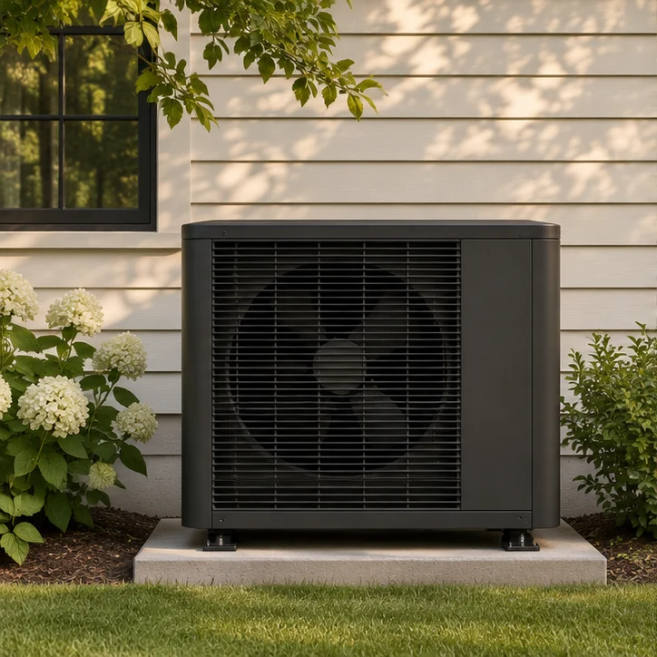

Illinois property services
Heating & air
Comfort starts with the room you use every day. Get It Done LLC handles heating, ventilation and air conditioning projects for Illinois homes.

Scope of work
- Heating
- Is one bedroom chilly, or does the whole house struggle to warm up? The rooms affected and the time of day can help narrow down the heating work you need.
- Air conditioning
- Uneven cooling, weak airflow and a system that runs longer than usual are different concerns. A description of what you notice helps define the job.
- Ventilation
- If a room feels stuffy or a vent has little airflow, note which part of the house it serves and whether nearby rooms feel the same.
Planning your project
Have the system make and model handy if you know them. Include the thermostat setting, when the issue started and which rooms are affected.